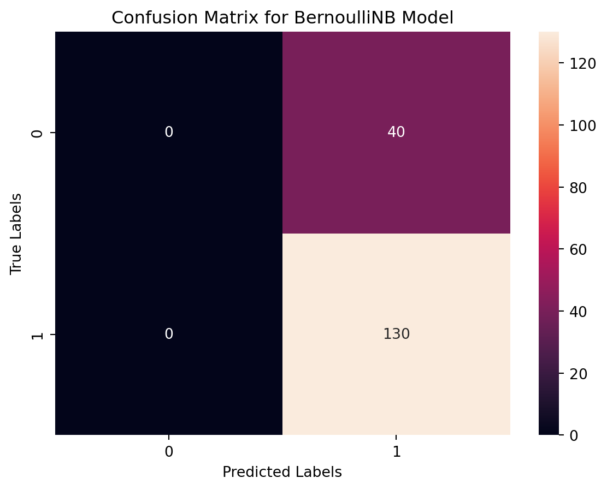
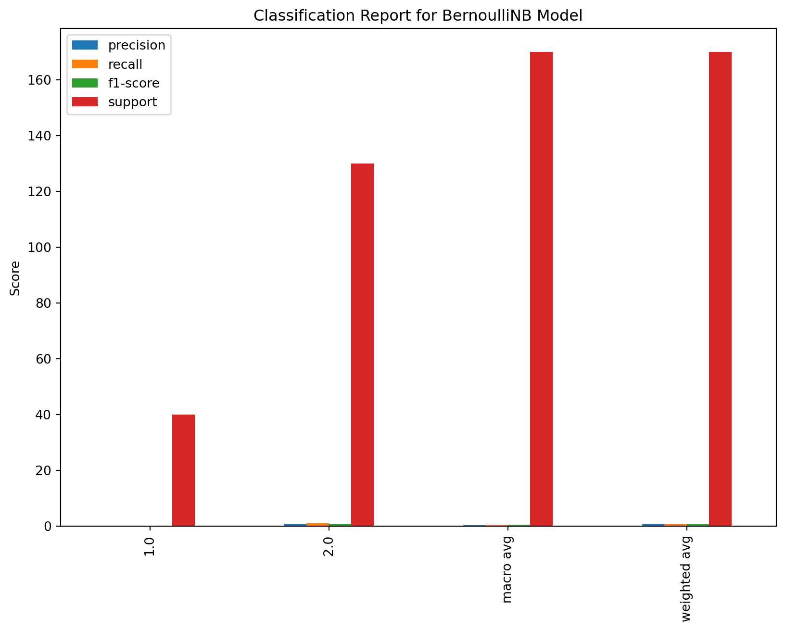

Naive Bayes classifier for multivariate Bernoulli models
Why I used this kind of analysis?
Code
import pandas as pdfrom sklearn.model_selection import train_test_splitfrom sklearn.naive_bayes import BernoulliNBfrom sklearn.metrics import classification_report, accuracy_scorefrom sklearn.preprocessing import OneHotEncoderimport os# Load the datasetdf = pd.read_csv('C:/Users/NUSAI/Desktop/Machine learning/HebaNu.github.io/HebaNu.github.io/HebaNu/posts/Probability theory and random variables/POST1.csv')# Replace values in column 'Work Method'df['Work Method'] = df['Work Method'].replace(3, 2)df['Work Method'] = df['Work Method'].replace(4, 1)# Drop rows where any cell is NaN in the 'Work Method' columndf = df.dropna(subset=['Work Method'])# One-hot encodingencoder = OneHotEncoder(sparse=False)X = encoder.fit_transform(df[[' industry sector']]) # Use the correct column name# Target variabley = df['Work Method']# Split the datasetX_train, X_test, y_train, y_test = train_test_split(X, y, test_size=0.2, random_state=42)# Train the Bernoulli Naive Bayes modelmodel = BernoulliNB()model.fit(X_train, y_train)# Make predictions and evaluate the modely_pred = model.predict(X_test)# Save the updated DataFrame back to CSV# Define the full path for the output fileoutput_path ='C:/Users/NUSAI/Desktop/Machine learning/HebaNu.github.io/HebaNu.github.io/HebaNu/posts/Probability theory and random variables/updated_POST1.csv'# Create the directory if it does not existos.makedirs(os.path.dirname(output_path), exist_ok=True)df.to_csv(output_path, index=False)# Output the classification report and accuracyprint(classification_report(y_test, y_pred, zero_division=0))print(f'Accuracy: {accuracy_score(y_test, y_pred)}')
C:\Users\NUSAI\anaconda3\Lib\site-packages\sklearn\preprocessing\_encoders.py:972: FutureWarning:
`sparse` was renamed to `sparse_output` in version 1.2 and will be removed in 1.4. `sparse_output` is ignored unless you leave `sparse` to its default value.
The results from your BernoulliNB model show that:
The model is predicting class 2.0 with high precision (76%) and recall (100%), which means for this class, it performs well both in terms of the accuracy of the positive predictions it makes (precision) and its ability to find all the positive instances (recall).
For class 1.0, however, the model does not predict any instances correctly, which suggests that either there’s an issue with the distribution of your classes (perhaps class 1.0 is underrepresented), or that the features do not provide enough information to distinguish class 1.0 from class 2.0. The overall accuracy of the model is 76.47%, which means that it correctly predicts the class for 76.47% of the test set.
The macro avg and weighted avg for precision, recall, and f1-score provide a summary of the effectiveness of the model across the classes. The low macro avg for precision and f1-score indicates that one of the classes does not perform well, which we already know is class 1.0.
The f1-score is a harmonic mean of precision and recall and is a useful metric when you have classes that are imbalanced. In your case, the f1-score for class 1.0 is 0.00, indicating poor performance for this class.
To create plots that visualize the performance of your BernoulliNB model, you would typically look at the confusion matrix, precision-recall, and possibly ROC curves. Below are examples of how you could generate each of these plots using matplotlib and scikit-learn:
Confusion Matrix: Visualizes the correct and incorrect predictions compared to the actual values.
Code
from sklearn.metrics import confusion_matriximport seaborn as snsimport matplotlib.pyplot as plt# Assuming y_test and y_pred are already defined from your BernoulliNB modelcm = confusion_matrix(y_test, y_pred)sns.heatmap(cm, annot=True, fmt="d")plt.title('Confusion Matrix for BernoulliNB Model')plt.xlabel('Predicted Labels')plt.ylabel('True Labels')plt.show()

ROC Curve: Plots the true positive rate against the false positive rate.
Code
from sklearn.metrics import roc_curve, aucfrom sklearn.metrics import RocCurveDisplayimport matplotlib.pyplot as plt# Adjust y_test to have binary labels 0 and 1y_test_binary = y_test.replace({1: 0, 2: 1})# Get predicted probabilities for the positive class (e.g., class 2)y_pred_prob = model.predict_proba(X_test)[:, 1] # Index 1 for the probability of class 2# Calculate the ROC curvefpr, tpr, thresholds = roc_curve(y_test_binary, y_pred_prob)# Calculate the AUC (Area Under Curve)roc_auc = auc(fpr, tpr)# Plot the ROC curvedisp = RocCurveDisplay(fpr=fpr, tpr=tpr, roc_auc=roc_auc)disp.plot()plt.title('ROC Curve for BernoulliNB Model')plt.show()
Classification Report: Presents precision, recall, f1-score for each class.
Code
from sklearn.metrics import classification_reportimport pandas as pdreport = classification_report(y_test, y_pred, output_dict=True)df_report = pd.DataFrame(report).transpose()df_report.drop(['accuracy'], inplace=True) # Drop accuracy as it's not a class-specific metricdf_report.plot(kind='bar', figsize=(10, 7))plt.title('Classification Report for BernoulliNB Model')plt.ylabel('Score')plt.show()
C:\Users\NUSAI\anaconda3\Lib\site-packages\sklearn\metrics\_classification.py:1469: UndefinedMetricWarning:
Precision and F-score are ill-defined and being set to 0.0 in labels with no predicted samples. Use `zero_division` parameter to control this behavior.
C:\Users\NUSAI\anaconda3\Lib\site-packages\sklearn\metrics\_classification.py:1469: UndefinedMetricWarning:
Precision and F-score are ill-defined and being set to 0.0 in labels with no predicted samples. Use `zero_division` parameter to control this behavior.
C:\Users\NUSAI\anaconda3\Lib\site-packages\sklearn\metrics\_classification.py:1469: UndefinedMetricWarning:
Precision and F-score are ill-defined and being set to 0.0 in labels with no predicted samples. Use `zero_division` parameter to control this behavior.

Please note that in order to generate a ROC curve or Precision-Recall curve, you need the probability scores or decision function, not just the predicted labels. If y_pred contains only class labels, you would need to use the predict_proba or decision_function method of your classifier to obtain these scores.
These code snippets are intended to be run in your local Python environment, and you’ll need to ensure that y_test and y_pred are defined in your workspace after running your BernoulliNB model. If you encounter any issues with these plots or if you require further customization, feel free to ask for additional guidance.